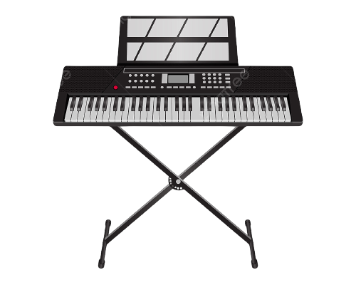
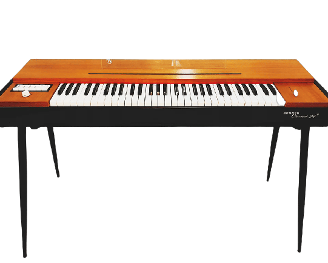

We specialize in the sale and repair of classic keyboards, in particular the Fender Rhodes, Wurlitzer EP200, and Hohner Clavinet.

Fender Rhodes
The Fender Rhodes is a classic electric piano, famous for its warm and distinctive tones, widely used in jazz and popular music. Learn More!
